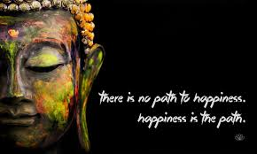

12.31.2050 | ALL ABOUT Buddha
All About Buddha
 Philosophy examines the rich intellectual tradition that stems from the Buddha’s direct insights into the nature of mind and reality.
Philosophy examines the rich intellectual tradition that stems from the Buddha’s direct insights into the nature of mind and reality.
Genuine practice requires investigations of core philosophical concepts like emptiness, impermanence, and non-self that form the foundation of Buddhist understanding.
Direct study reveals how philosophical inquiry is not mere intellectual exercise but a vital tool for cutting through confusion and cultivating wisdom. Buddhist philosophy remains profoundly relevant today,
offering analytical tools and insights that can transform our fundamental relationship with ourselves and the world.
Gautama Buddha, born Siddhartha Gautama, lived from approximately 563 BCE to 483 BCE, dying at around age 80 in Kushinagar, India, after attaining enlightenment and establishing Buddhism in ancient India.
While exact dates are debated by historians, this timeframe is widely accepted.
Birth: Circa 563 BCE in Lumbini, Nepal (then part of the Shakya Republic).
Death (Parinirvana):Circa 483 BCE in Kushinagar, India, at roughly 80 years old.

Famous Buddha’s quotes
Famous Buddha quotes emphasize mindfulness, the power of the mind, compassion, and personal responsibility,urging focus on the present, controlling thoughts (like anger), and finding inner peace, with memorable lines like,
"What you think, you become,"
"Pain is inevitable; suffering is optional,"
"The quieter you become, the more you can hear".
Buddha's spiritual journey
Buddha's spiritual journey began as Prince Siddhartha Gautama, sheltered from suffering, who renounced his luxurious life after witnessing old age, sickness, and death, leading him to seek liberation from life's inevitable sorrows through asceticism, meditation, and deep contemplation,culminating in his awakening (Enlightenment or Bodhi) under the Bodhi tree at Bodh Gaya, where he understood the Four Noble Truths and Eightfold Path, transforming him into the Buddha, the "Enlightened One," and inspiring his lifelong mission to teach others the path to Nirvana (cessation of suffering).
The Teacher's Path (Dharma & Sangha)
First Sermon: He journeyed to Sarnath to teach his first disciples, outlining the Four Noble Truths (suffering, its cause, its cessation, the path to cessation)
and the Eightfold Path (right understanding, thought, speech, action, livelihood, effort, mindfulness, concentration).
Legacy:He spent the next decades wandering, teaching, and establishing the Buddhist monastic order (Sangha), leaving a spiritual legacy focused on compassion, mindfulness, and liberation.
motive of Buddha
Buddha's core motive was to end suffering (dukkha)for all beings by finding liberation (Nirvana) through understanding the true nature of reality,leading him to renounce worldly life and teach the Four Noble Truths and the Eightfold Path, emphasizing compassion, mindfulness, and moderation to overcome craving and ignorance. His life's work focused on guiding others to awaken to this truth and achieve lasting peace and enlightenment.
Buddha's core teachings
Buddha's core teachings center on the Four Noble Truths (life involves suffering, caused by craving,
ending suffering is possible, and the Noble Eightfold Path leads to that end) and the principle of Karma, emphasizing ethical living, mindfulness,
and wisdom to achieve liberation (Nirvana) from the cycle of rebirth, advocating a Middle Way between indulgence and severe asceticism.
The Four Noble Truths
- Dukkha (Suffering): Life inherently involves suffering, dissatisfaction, and impermanence.
- Samudaya (Origin of Suffering): Suffering arises from craving, attachment, and desire (tanha).
- Nirodha (Cessation of Suffering): It's possible to end suffering by eliminating craving and ignorance.
- Magga (The Path): The Noble Eightfold Path provides the way to end suffering.
The Noble Eightfold Path (Magga)
This is the practical guide for ethical conduct, mental discipline, and wisdom:
- Right Understanding/View: Comprehending the Four Noble Truths.
- Right Thought/Intention: Cultivating pure, compassionate, and non-harmful thoughts.
- Right Speech: Speaking truthfully, kindly, and helpfully.
- Right Action: Acting ethically (following the Five Precepts).
- Right Livelihood: Earning a living ethically, without harming others.
- Right Effort: Striving to prevent unwholesome states and develop wholesome ones.
- Right Mindfulness: Present-moment awareness of body, feelings, mind, and phenomena.
- Right Concentration:Developing deep focus through meditation (Dhyana).
Key Concepts
Karma: The law of cause and effect; wholesome actions lead to happiness, unwholesome to suffering, notes PBS.Middle Way: A path avoiding extremes of sensual indulgence and severe asceticism, focusing on balance.
Five Precepts: Core ethics: abstain from killing, stealing, sexual misconduct, lying, and intoxicants.
Impermanence (Anicca) & No-Self (Anatta):All things are changing, and there's no permanent, independent self.
Nirvana: The ultimate goal, liberation from the cycle of rebirth (samsara) and suffering.
Core Concepts

Four Noble Truths:
1. Suffering exists; 2. It arises from desire/ignorance; 3. It can cease; 4. The way to cessation is the Eightfold Path.
Noble Eightfold Path:
A practical guide to ethical living and mental development, including Right View, Thought, Speech, Action, Livelihood, Effort, Mindfulness, and Concentration.
Karma:
The law of cause and effect where actions (karma) determine future experiences, leading to happiness or suffering.
Nirvana:
The ultimate goal: liberation from the cycle of rebirth (samsara) by extinguishing greed, hatred, and delusion.
Dharma:
The teachings of the Buddha, the ultimate reality, or the path to liberation.
Key Practices & Ethics
- Five Precepts (Morality): Not killing, stealing, engaging in sexual misconduct, lying, or using intoxicants that cloud the mind.
- Mindfulness (Sati): Moment-to-moment awareness of body, feelings, mind, and phenomena, often cultivated through meditation.
- Meditation (Samadhi): Developing concentration and focus to see reality clearly.
The Buddha
1.Founded by Siddhartha Gautama, an Indian prince who achieved enlightenment and became the Buddha ("Awakened One").
2.Taught that happiness isn't found in sensory pleasure but in overcoming desire and cultivating wisdom and compassion.